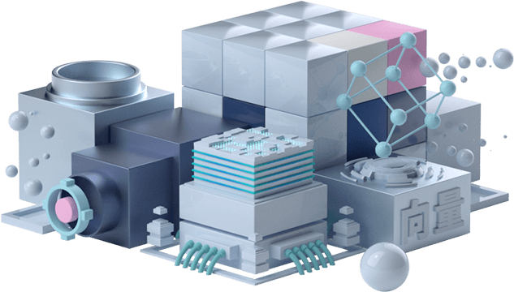
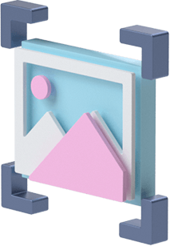
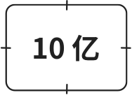
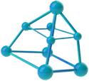
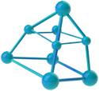
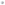
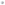
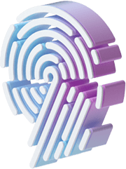
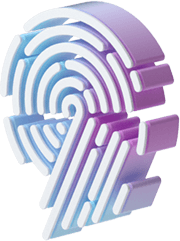
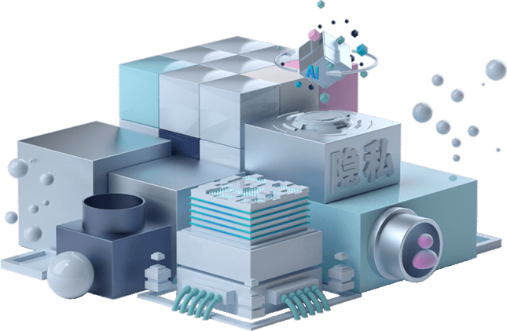

源头创新 勇领前沿

墨奇科技创造性地提出了多尺度向量和图表示框架，弥补了技术栈的最底层空白，基于该底层创新，
团队在存储、分布式管理、高性能搜索、隐私计算等不同技术层实现了一系列关键突破，实现了第一个完整的
基于向量和图表示的非结构化数据处理技术栈，并成功构造了大规模的原型平台



-
对于非结构化数据建立通用的
向量和图表示 -

多尺度，多样化的特征表示，对于残缺、
形变、低质量图像保持精确和稳定 -
针对多尺度、多样化特征优化的
CPU/GPU/NPU异构算法 -
速度比传统算法提高两个
数量级以上 -

十亿级图像数据库的高精准比对
(top 5精度达9%)


 

-

利用多尺度特征内在信号
实现无监督学习 -

随系统使用持续学习，
精度不断提高 -

国际上首次实现了无需人工标注的
大库指纹比对，精度远超需标注
的传统系统


 



 

-
国际首创刑侦级非接触
指掌纹采集技术，图像质量
远超同类产品 -

多目视觉+结构光对手
皮肤表面三维建模，达到
亚毫米精度 -
伸手即采，卫生便捷
-

干、湿、浅等疑难
指纹都友好



-
让生物特征如密码一样保存密文
且可修改，消除隐私担忧 -

通过生物信息 + 秘钥生成保护隐私的生物特征，
支持比对而不可恢复原始特征 -

不同数据库使用独立特征，
不串联，可撇销